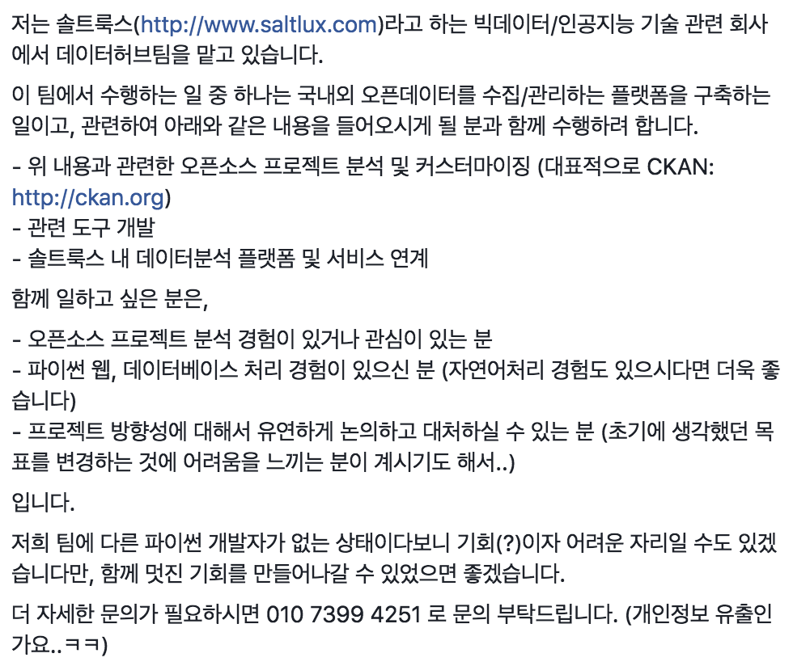

한국에서 일어나는 파이썬 관련 소식을 전합니다.
블로그
SQLAlchemy 1.1에 추가된 index_property 기능 소개 by youknowone님
SQLAlchemy 1.1에 index_property 기능을 추가한 youknowone님이 직접 해당 기능에 대해 설명합니다.
(번역) 비동기 파이썬 by Mingrammer님
파이썬에서의 비동기 프로그래밍을 다룬 Asynchronous Python 글을 Mingrammer님이 번역하였습니다.
프로젝트
slacker로 만든 커밋 스토킹 봇 by hyesun03님
커밋한지 얼마나 지났는지 알려주는 슬랙용 봇을 hyesun03님이 만들었습니다.
행사
PyCon Korea 2017 준비위원회 모집
PyCon Korea 2017을 준비하는 준비위원회를 모집합니다.

구인
솔트룩스
페이스북에 접속하지 않은 분들을 위해 캡처 화면을 아래에 첨부합니다.

Dable
콘텐츠 디스커버리 플랫폼을 만드는 Dable에서 파이썬 백엔드 개발자를 모집합니다.